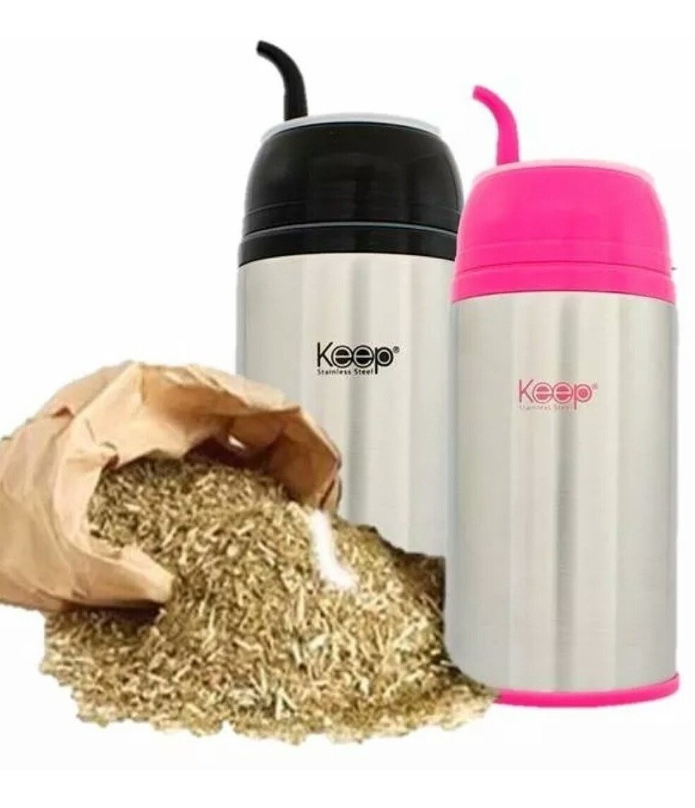

Nuestros productos

Termo Journey

Con este termo el agua durara muchas horas mas gracias a su gran aislacion de temperatura.
ComprarDespolvillador de Yerba Mate

Para aquellos que estan cansados del polvo en la yerba y desean probar algo nuevo.
ComprarJuego completo cuero ecológico
Set Equipo Mate Completo Termo Acero Mochila Matera con cuero ecologico.
ComprarMate Listo Keep
Perfecto para viajes y lugares de trabajo que no nos dan el tiempo a tomar un mate clasico.
ComprarTermo Journey
Con este termo el agua durara muchas horas mas gracias a su gran aislacion de temperatura.
ComprarDespolvillador de Yerba Mate
Para aquellos que estan cansados del polvo en la yerba y desean probar algo nuevo.
ComprarJuego completo cuero ecológico
Set Equipo Mate Completo Termo Acero Mochila Matera con cuero ecologico.
ComprarMate Listo Keep
Perfecto para viajes y lugares de trabajo que no nos dan el tiempo a tomar un mate clasico.
Comprar